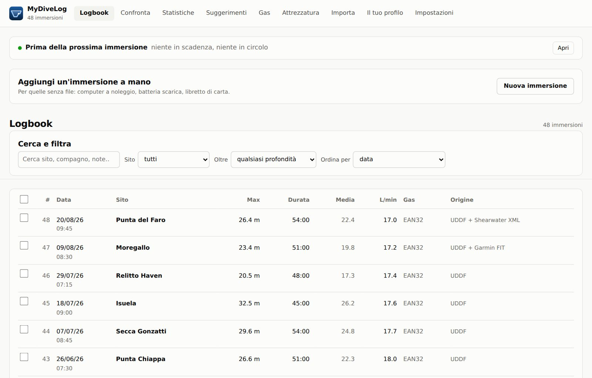
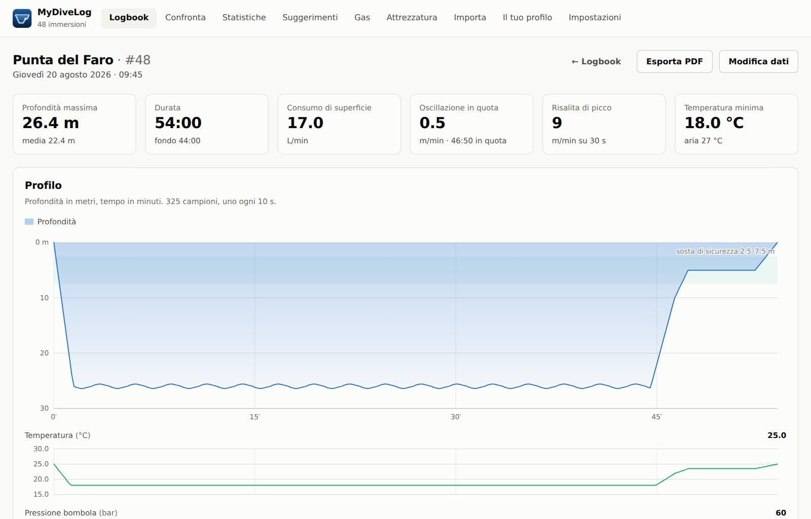
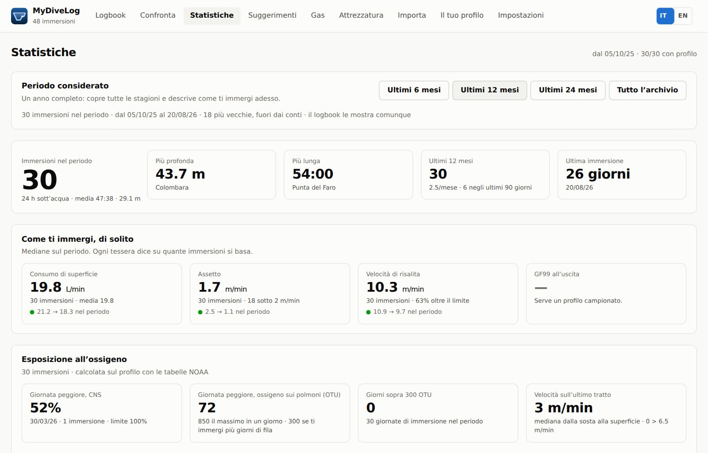
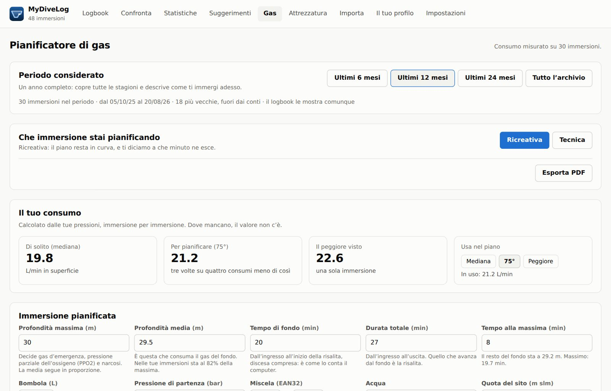
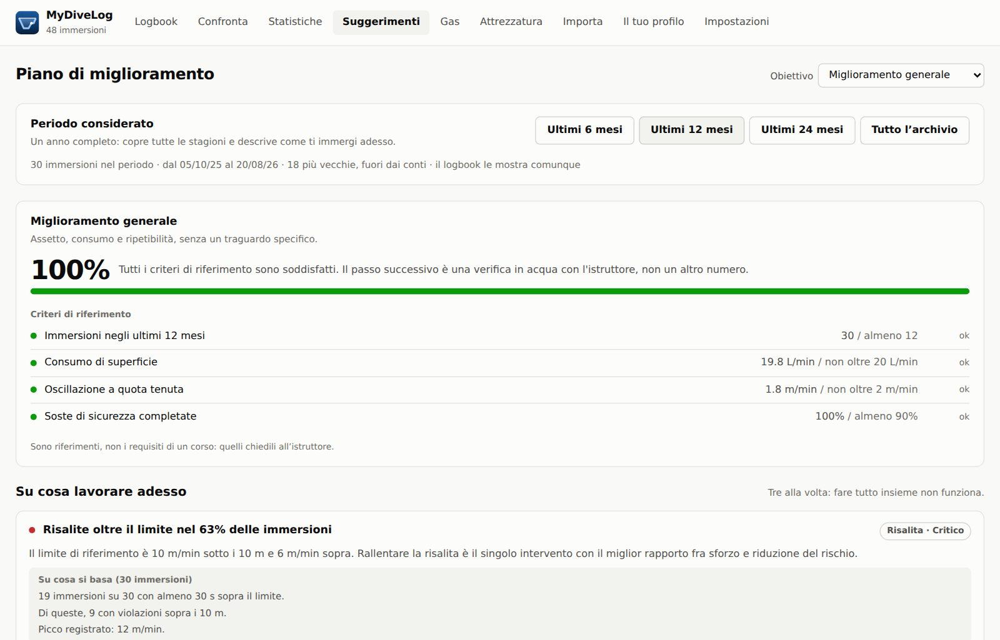

Legge i file di tutti i tuoi computer e, quando due hanno registrato la stessa immersione, ne fa una riga sola tenendo il meglio di ciascuno. Poi analizza i profili e pianifica. L'archivio resta sul tuo dispositivo.
Porti un computer al polso e un secondo di riserva. Ne hai cambiato uno negli anni. Scarichi sia dall'app del costruttore sia dal computer. In tutti e tre i casi lo stesso tuffo finisce in due file diversi, e nessuno dei due è completo. Un logbook che ti fa scegliere quale importare ti fa buttare via metà di quello che hai.
Nessuna delle due righe sparisce, e nessun dato resta indietro.
Due computer non segnano mai la stessa ora. Lo scarto viene dedotto dall'insieme delle tue immersioni, e la conferma si fa sull'impronta del profilo — non sulla data.
Fra un profilo più fitto e uno che sa anche di decompressione vince il secondo — e il primo resta lì, perché è su quello che velocità e assetto si misurano bene.
Ogni immersione elenca le fonti che l'hanno costruita. Se un dato manca, sai quale computer non lo scriveva — invece di chiederti se l'ha perso il programma.
Un logbook per chi vuole capire cosa gli dicono i propri dati, non solo conservarli.
UDDF, Shearwater (XML e archivio nativo), Scubapro LogTRAK, Garmin FIT, Subsurface, CSV. Il formato si riconosce dal contenuto, non dall'estensione.
Shearwater e Scubapro/Uwatec, con segnalibro: al secondo collegamento scarica solo le immersioni nuove, non tutta la memoria.
Bühlmann ZH-L16C con gradient factor, sedici compartimenti, esposizione all'ossigeno per giornata, oscillazione d'assetto e velocità di risalita — con l'affidabilità di ogni numero dichiarata.
Gas e decompressione: multi-livello, cambi automatici alla MOD, CCR con setpoint e diluente, bailout e contingenze. Il consumo lo prende dalle tue immersioni, non da un manuale.
Statistiche, tendenze e suggerimenti con la prova numerica sotto: quante risalite fuori limite, quante soste di sicurezza saltate, quanto costano le ripetitive.
Backup completo in JSON, esportazione UDDF, CSV e KML, stampa del logbook e del piano. L'archivio locale è un file SQLite che puoi aprire con qualunque strumento.
Sono schermate vere, prese dall'applicazione con un archivio di prova: non ci sono ritocchi e non c'è niente che il programma non faccia davvero.





Chi usa più di un dispositivo può tenere l'archivio allineato. Si entra con un account Apple o Google e l'app crea un database tutto tuo: non c'è niente da configurare, e le immersioni viaggiano direttamente fra l'applicazione e quel database.
L'accesso non è obbligatorio, e la sincronizzazione non è automatica. Il logbook si apre, importa e analizza senza aver mai visto un account, perché l'archivio è sul dispositivo. E niente parte finché non premi Sincronizza: un logbook si consulta anche in barca, dove la rete non c'è.
Ogni persona ha un database separato dagli altri — non una riga in una tabella comune. Il servizio che consegna le chiavi non conserva nessun elenco di iscritti e non vede passare le immersioni: dice chi sei e ti dà una chiave che vale due ore. Puoi cancellare il tuo account dall'app, e con lui il database. Dettagli in Privacy.
MyDiveLog è software libero sotto licenza MIT: il codice si legge, si copia e si modifica. Non costa niente, non ha abbonamenti, non ha pubblicità e non raccoglie statistiche d'uso.
Il pacchetto macOS è nelle release: è firmato Developer ID e notarizzato da Apple, quindi si apre con un doppio clic. Serve un Mac Apple Silicon.
La versione iPhone gira, ed è stata inviata all'App Store: nell'attesa si compila dal sorgente, e le istruzioni stanno nel repository.
MyDiveLog non è un computer subacqueo e non va usato per prendere decisioni in acqua. I calcoli di decompressione, i piani e le analisi servono a studiare le immersioni fatte e a preparare quelle da fare: non sostituiscono il tuo computer, il tuo addestramento e il tuo giudizio. L'immersione subacquea comporta rischi, anche mortali.
Gratis, senza account e senza abbonamento. Scarichi, trascini dentro i file che hai già, e in un minuto tutto il tuo storico è in un elenco solo.